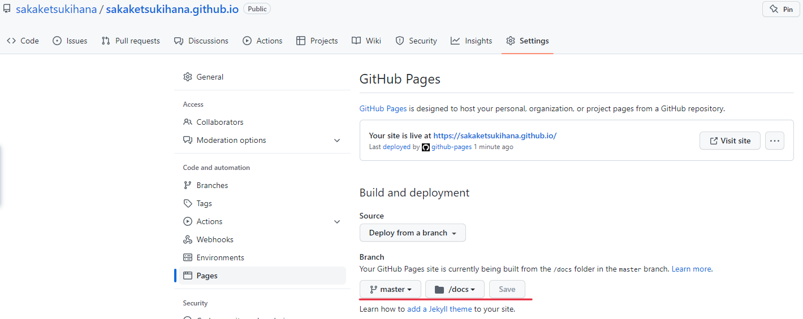
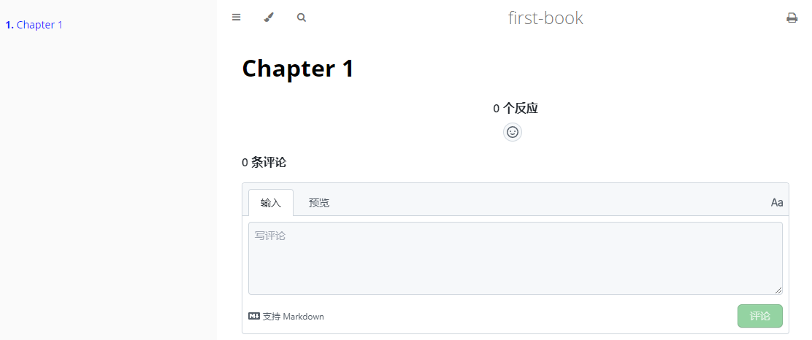

mdBook
mdBook是一个markdown文件文档生成工具, 将markdown文档转换为html格式
像Gitbook一样, 但用Rust实现
Hello World
获取mdBook, 从mdBook的Github页面下载即可
创建项目 mdbook init first-book
然后得到一个如下的文件结构
first-book
├── book.toml 项目配置文件
├─book 默认构建完的静态工程输出目录
└─src 存放md文档的目录
├── SUMMARY.md 项目导航侧边栏的定义文件(文件名不能更改)
└── chapter_1.md mdBook生成的示例文件
构建并通过默认浏览器打开 mdbook build first-book --open
或者通过启动服务的方式mdbook serve first-book --open
启动服务会监听文件变更重新构建html文件并实时反映到网页上
GitHub Pages
GitHub Pages是Github提供的一个网页寄存服务, 于2008年推出
可以用于存放静态网页, 包括博客、项目文件、甚至整本书1
Create a repository
既然是Github提供的服务, 那第一步就是需要创建一个仓库
创建一个名为username.github.io的public仓库
Hello World
git clone https://github.com/username/username.github.io
cd username.github.io
echo "Hello World" > index.html (linux 指令)
"Hello World" | Out-File index.html (windows powershell 指令)
git add --all
git commit -m "Hello World"
git push -u origin main
完成后使用浏览器打开https://username.github.io2
更改构建分支/文件夹

若想要更改构建的分支或者文件夹
通过Github仓库页面, 选择Settings
然后从左边导航栏中选中Pages
通过Branch修改, Save后启用
Giscus
由GitHub Discussions驱动的评论系统
获取Giscus配置
整合
为mdBook启用Giscus
假设使用的是
username.github.io来作为Giscus配置仓库
在first-boo目录下新增一个js文件
var giscus = function () {
const script = document.createElement("script");
script.type = "text/javascript";
script.src = "https://giscus.app/client.js";
script.setAttribute("data-repo", "username/username.github.io");
script.setAttribute("data-repo-id", "data-repo-id");
script.setAttribute("data-category", "data-category");
script.setAttribute("data-category-id", "data-category-id");
script.setAttribute("data-mapping", "title");
script.setAttribute("data-term", "0");
script.setAttribute("data-reactions-enabled", "1");
script.setAttribute("data-emit-metadata", "0");
script.setAttribute("data-input-position", "top");
script.setAttribute("data-theme", "preferred_color_scheme");
script.setAttribute("data-lang", "zh-CN");
script.setAttribute("data-loading", "lazy");
script.crossOrigin = "anonymous";
script.async = true;
document.getElementById("giscus-container").appendChild(script);
};
window.addEventListener('load', giscus);
下载mdBook的handlebars模板
cd username.github.io
mkdir theme
cd theme
wget https://raw.githubusercontent.com/rust-lang/mdBook/master/src/theme/index.hbs -o index.hbs
修改index.hbs模板
......
<main>
{{{ content }}}
<div id="giscus-container"></div> // 新增 giscus 元素
// 不能使用 giscus 作为ID, 不然会覆盖到自身本来的
</main>
......
修改book.toml增加指定加载新增的js文件, 假设js文件名为giscus
......
[output.html]
additional-js = ["giscus.js"]
......
最后构建静态文件并将文件提交到username.github.io仓库
mdbook build first-book
好了, 打开https://username.github.io

共用仓库
如果你想将md文件与静态文件放在同个仓库
可以这样修改book.toml的构建输出文件夹
......
[build]
build-dir = "docs"
......
并将Github Pages中构建的文件夹更改为docs